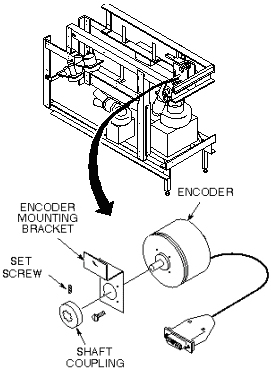

Operating Documentation
Direction 5133315-3, Rev# 14
Signa EXCITE HD 1.5T Service Methods
Module Version 1.0, Version Date 5/3/07
Operating Documentation |
| Required Persons | Preliminary Reqs | Procedure | Finalization |
|---|---|---|---|
| 1 |
Replacement procedures for hardware located in the rear pedestal. For Cx systems refer to procedure for Rear Pedestal Hardware Replacement for Non-Cx Magnet. The Longitudinal Encoder (MG3A6) is located in the rear pedestal (MG3). See Illustration 1.
| Item | Qty | Effectivity | Part# | Manufacturer | |
|---|---|---|---|---|---|
| Non -ferrous flat head screw driver | 1 | - | - | - | |
| Non-ferrous hexagon (allen) wrench set | 1 | - | - | - | |
| Regular screwdriver | 1 | - | - | - | |
| Non-ferrous wrenches | 1 | - | - | - | |
| ||||
| FERROUS MATERIAL HAZARD!! | ||||
| ENCODER CONTAINS FERROUS MATERIAL. | ||||
| HOLDING THIS ASSEMBLY TOO CLOSE TO THE MAGNET BORE WILL FORCIBLY ATTRACT IT TO THE MAGNET. TO PREVENT POSSIBLE BODILY INJURY OR MATERIAL DAMAGE, REMOVE ENCODER AND MOUNTING BRACKET FROM MAGNET ROOM TO INSTALL NEW ENCODER. |
Perform Lock out and tag out of the PDU.
Remove rear pedestal right side cover (as viewed from rear of magnet).
Disconnect encoder cable from J3 of Magnet I/F #1 (MG3 A1).
Loosen set screw on shaft coupling (see Illustration 1).
Illustration 1: LONGITUDINAL ENCODER LOCATION

Remove screw from encoder mounting bracket, and remove encoder and mounting bracket from rear pedestal. Remove encoder and mounting bracket from magnet room (see Illustration 2).
Illustration 2: LONGITUDINAL ENCODER LOCATION
Remove four screws that hold encoder to mounting bracket.
Install new encoder onto mounting bracket with four screws.
Install bracket and encoder assembly onto rear pedestal.
Tighten set screw on shaft coupling.
Connect encoder cable to J3 of Magnet I/F #1.
Replace rear pedestal right side cover.
Refer to the . Remove Lock out tag-out.
Restore power to system.
If necessary, Adjust encoder voltage. Refer to the procedure for .
Starting with cradle at Home position, drive table into bore until longitudinal position display reads 10 mm.
Place tape marker on cradle and adjacent spot on table.
Drive table into bore until longitudinal position display reads 1010 mm.
Measure distance between marks and verify that distance traveled is 1000 mm ±1 mm.
No finalization steps.